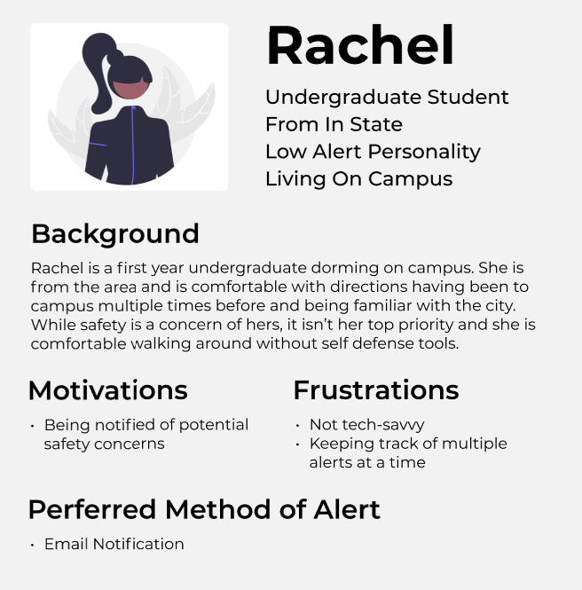
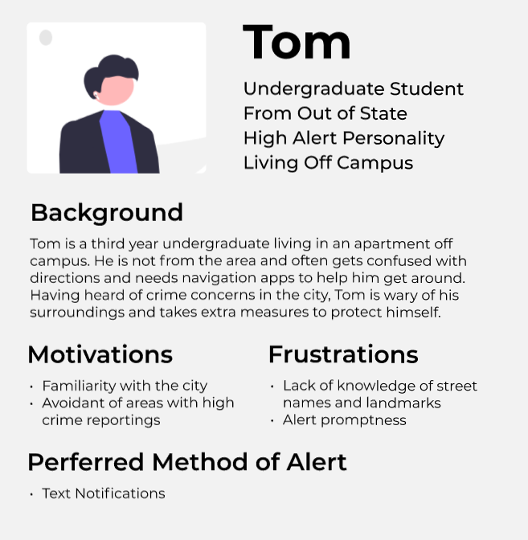
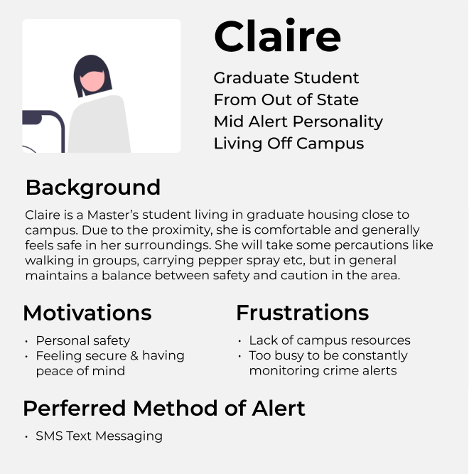
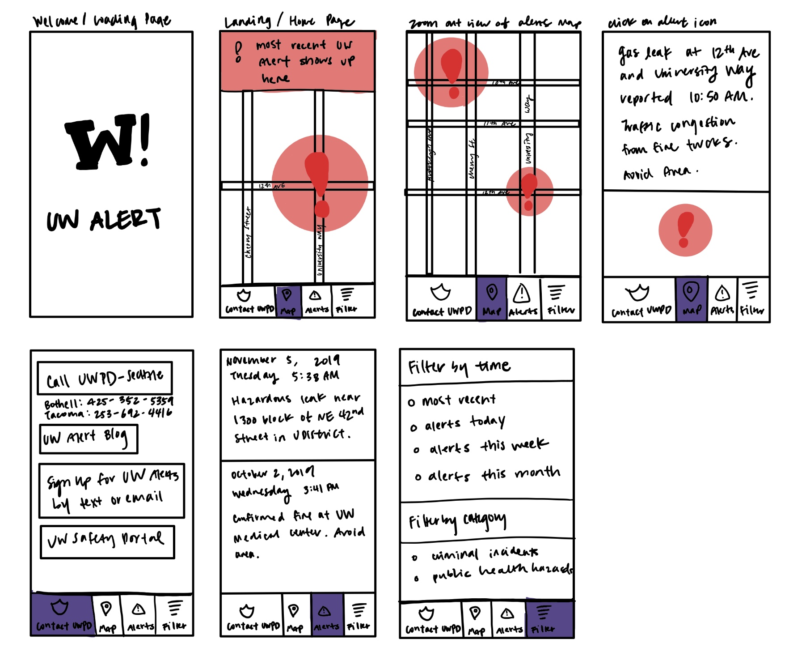
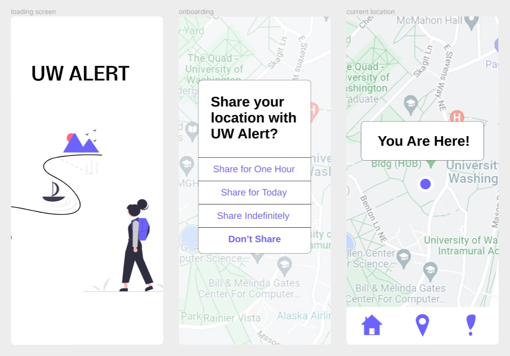
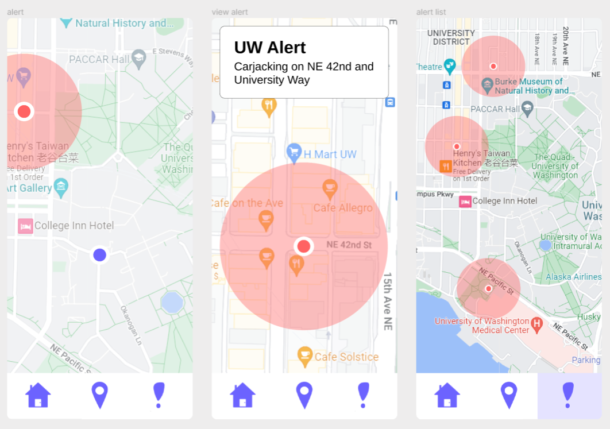
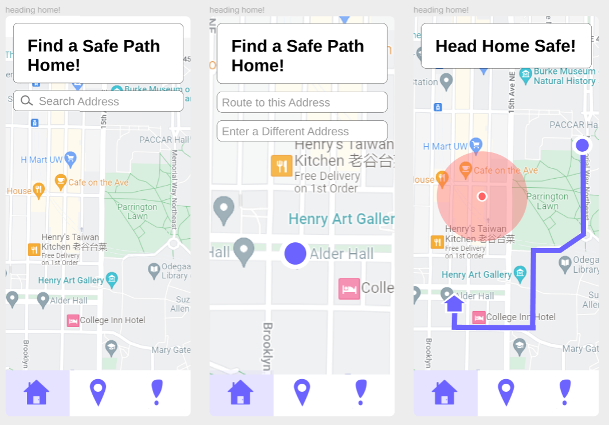

UW Alert Map Project
The University of Washington has a system called UW Alert where students can sign up for email or text notifications of warnings from the UW Police Department. While most known for their criminal activity alerts, UW Alert also sends warning for hazardous leaks, city curfews, and other public health information. For criminal incidents, they will often indicate the general area where the crime occured as well as a brief description of what happened and sometimes a description of the suspect. Here is an example of a UW Alert sent by email.

The format of these alerts are typically "incident" at "street name" and "street name" and typically includes a warning to avoid the area. For someone who is terrible with directions, like myself, I always found it difficult to figure out at a glance where exactly the area to avoid is.
Stakeholder Interviews
To prepare for this project I interviewed members of the UWPD, UW undergraduate students and the ASUW Director of Campus Partnerships (a seat on the student senate that works with campus organizations including UWPD)
General Insights
UWPD
- Priority of UWPD is student safety
- UWPD is taking active steps to increase safety in the community: security assessments, officers in residential halls, personal safety programs, community surveys, self-defense training and more
- UWPD performs daily security and police patrols, investigate criminal activity and respond to service calls
- UWPD encourages students to use UW Alert as a way to stay aware of potential dangers and to keep themselves safe
ASUW Senate
- Seattle doesn't have the cleanest reputation in terms of crime & homeless leading to uneasiness in new UW students and their families
- ASUW has been in talks with UWPD to extend jurisdiction beyond campus into northern parts of the Ave commonly frequented by students
- UW Alert is one of many tools developed to help increase the safety of students on campus. With nationwide tensions and growing anti-police sentiment ASUW is looking towards a variety of other solutions to crime prevention that are community-centered
UW Students
- Generally most students feel safe within campus boundaries, but start feeling more unsafe towards the outskirts of campus & towards the Ave
- UW Alert is a useful tool for vigilant students, and is used as a reference when there is commotion around campus
- Most students actively track UW Alerts, based on the notifications they receive
- For students who aren't familiar with all campus locations, alerts for areas like parking lots (which are denoted by letters and numbers, not by location ex:E16) can be confusing because students don't know what area it is referring to.
User Personas



Low Fidelity Prototyping

High Fidelity Prototyping



Feedback and Lessons Learned
Initially there were a lot of features I wanted to put in, sometimes I go into a project with just my own thoughts and ideas on what I can put in without wanting to first check current literature and best practices. After reviews and reiterations with different stakeholders, I learned about reducing cognitive load, the power of phrasing, Gestalt principles about grouping. For example, the UWPD always defers to 911 for emergencies and only provides a non-emergency number. Initially the "contact" tab of the app said "Call 911" at the top and the app had more red tones. However it was mentioned that red can heighten senses of agitation and stress which may lead to more impulsive decision making. In reviews, stakeholders also mentioned that when phrasing it like "call 911" first, they may not bother reading the rest of the header so it is better to note that for emergencies it is best to call 911. As a result of multiple iterations we have the final interactive prototype demo below: